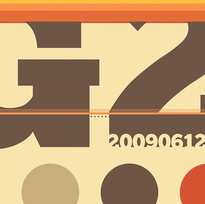
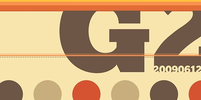
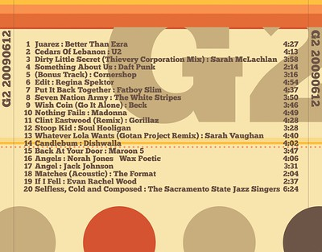

G2 20090612

It's the Year of MMIX, and you need to be making a mix. We've already talked about this. I don't just want say you need to make a mix, but I've now spun up the first disc to get this party started... or jam session. It's just shy of six months since I created the previous G2 album, but I'm back with another. Breaking from the norm, this album has less to do with my love for my wife, but more to do with a theme of music. I really aimed for music one could just chill out, lounge around, put this album on, sip a drink, enjoy some conversation and good company... and be perfect. Additionally, it'd be something that I think I could play if/when Maria and I sit out on the deck in the evenings together.
There were a couple exceptions to that calmer approach, but for the most part these songs are right up that line of thought:
| Track | Title | Artist | Duration |
|---|---|---|---|
| 1 | Juarez | Better Than Ezra | 4:27 |
| 2 | Cedars Of Lebanon | U2 | 4:13 |
| 3 | Dirty Little Secret (Thievery Corporation Mix) | Sarah McLachlan | 3:58 |
| 4 | Something About Us | Daft Punk | 2:14 |
| 5 | (Bonus Track) | Cornershop | 3:16 |
| 6 | Edit | Regina Spektor | 4:54 |
| 7 | Put It Back Together | Fatboy Slim | 4:37 |
| 8 | Seven Nation Army | The White Stripes | 3:50 |
| 9 | Wish Coin (Go It Alone) [Diplo Remix] | Beck | 3:46 |
| 10 | Nothing Fails | Madonna | 4:49 |
| 11 | Clint Eastwood (Ed Case/Sweetie Irie Refix) | Gorillaz | 4:28 |
| 12 | Stoop Kid | Soul Hooligan | 3:28 |
| 13 | Whatever Lola Wants (Gotan Project Remix) | Sarah Vaughan | 4:40 |
| 14 | Candlebum | Dishwalla | 4:02 |
| 15 | Back At Your Door | Maroon 5 | 3:47 |
| 16 | Angels | Norah Jones & Wax Poetic | 4:06 |
| 17 | Angel | Jack Johnson | 3:31 |
| 18 | Matches (Acoustic) | The Format | 2:04 |
| 19 | If I Fell | Evan Rachel Wood | 2:37 |
| 20 | Selfless, Cold and Composed | The Sacramento State Jazz Singers | 6:24 |

(the unfolded front cover)
Since this album was more theme-centric than amorous, I'm happy to explain a bit about the music. When I think of a lounge, in my mind I see a 60's or early 80's scene, with washed out colors and design typical of the era. I tried, but don't know if I nailed that quite perfectly with this approach. The folded front of the album up top obviously lets the letters bleed quite a bit.
The entire album was based on the first track, which is unfortunately not available on any online store I can find. It is, however, available on YouTube to listen to. I originally had this song, followed by Drugs or Me (Styrofoam Remix) by Jimmy Eat World, but remembered that song was actually on the G2 20070323 album (so not a candidate for this G2).
A lot of the tracks are songs that I enjoy, but other people might not. Some are clearly not in the same style as the rest of the album, and others are questionable in taste. The refix/remix of Clint Eastwood (track 11) is easily the standout tempo-wise, but somehow I think it works. I'm pleased with the overall combination of songs.

(the back cover)
The album's artwork came together really well.
- Chunk was the typeface this go-around. Not only did it serve as the typeface, but as some of the inspiration to the layout.
- I actually got the colors off of a layout for the Amputa Bangiz typeface - not a typeface I'm likely to use today, but the colors worked well (I found both this, and Chunk referenced in a recent Smashing Magazine article).
- No, the giant dots don't perfectly flow around the bottom of the album. You'll just have to deal with that, since I wasn't trying.
- A little bonus bit: instead of the usual song/artist separator of - I went for :. Lots of circles and dots on this one.
No matter the reasoning, or excessive design babble, I hope you enjoy it, but I hope Maria enjoys it more. You still need to make a mix. Start.
- Prior: The Year of the MMix
- Next: Maria's Party Invitations